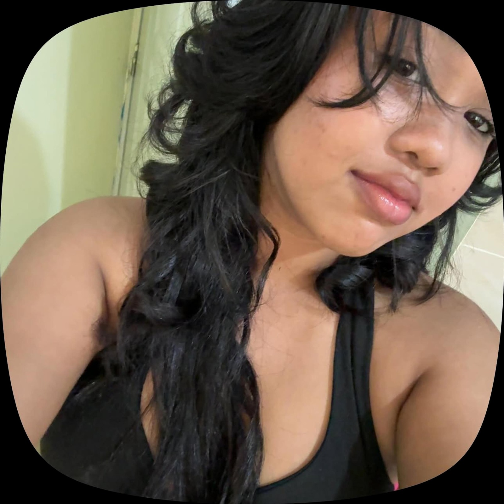
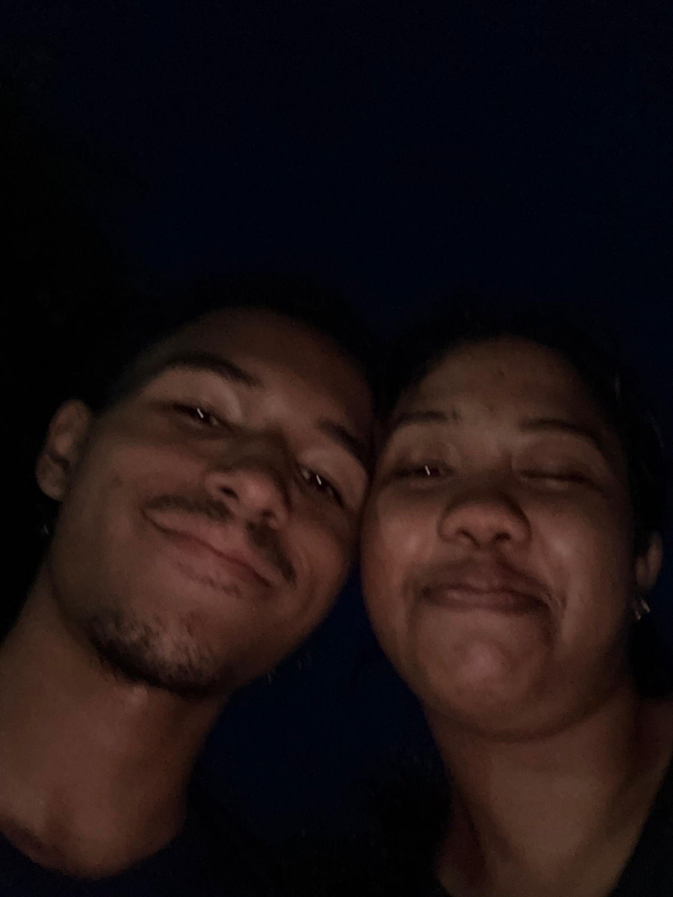
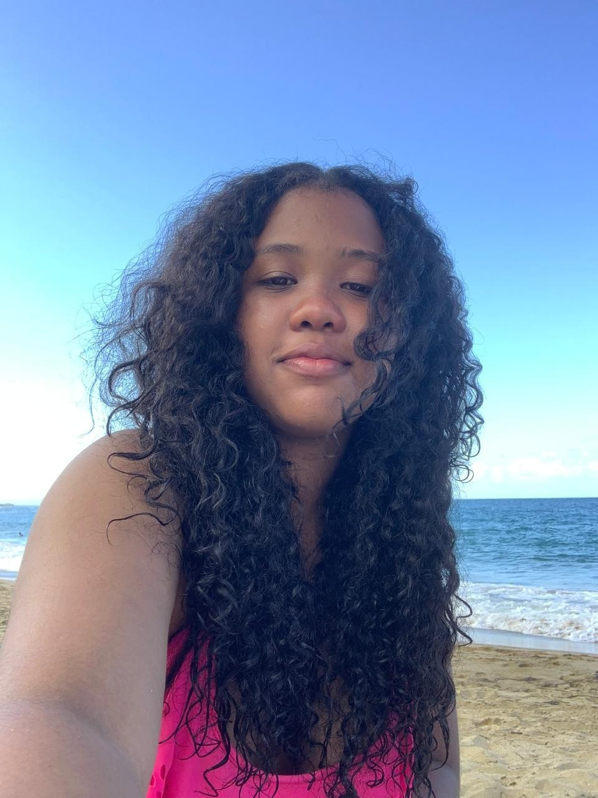
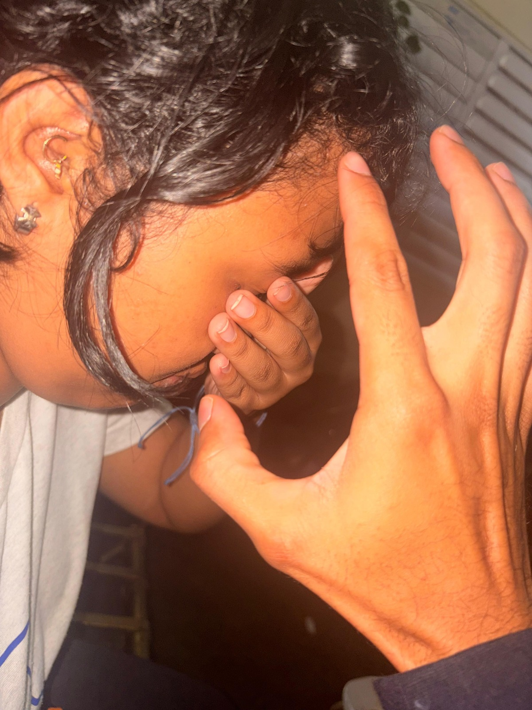
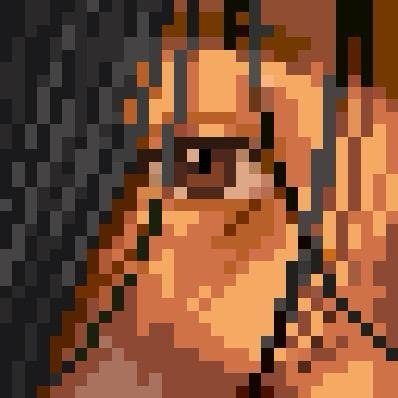
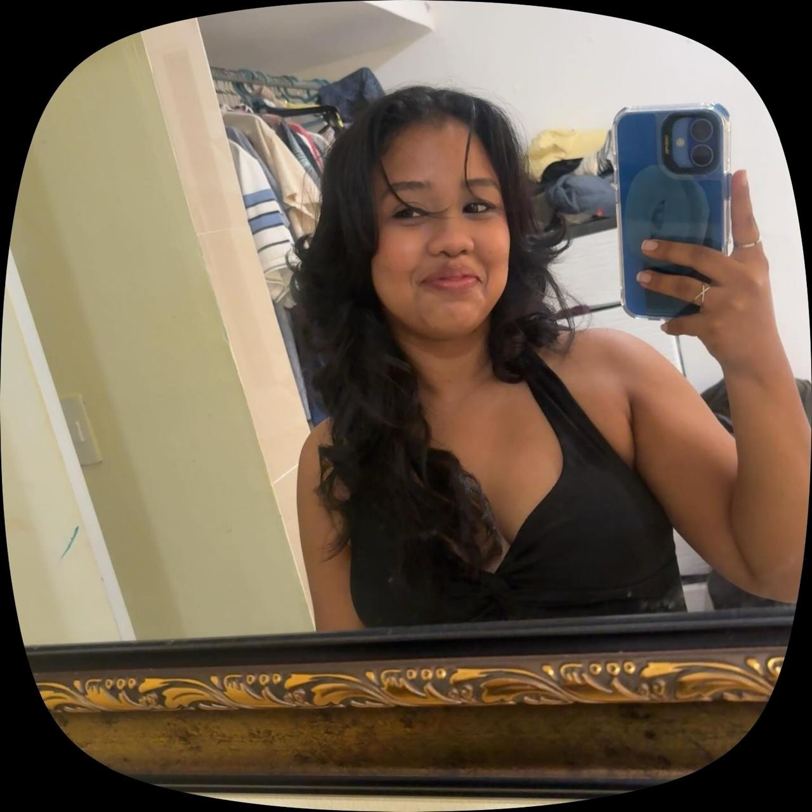
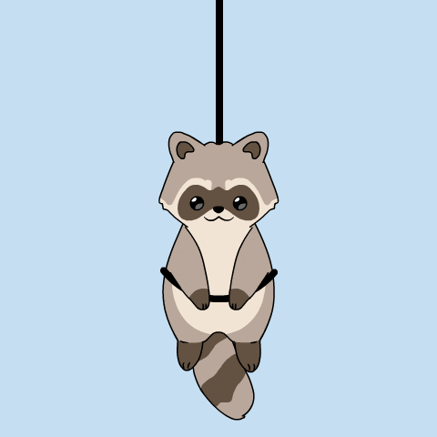
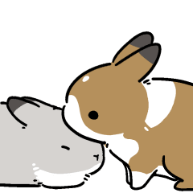

100 razones por las que te amo infinitamente demasiado 💙
Toca una foto para verla más grande








- Porque me celas como una niña chiquita.
- Porque desde que llegaste a mi vida, mis días tienen algo más bonito.
- Porque tu sonrisa tiene el poder de alegrarme incluso en mis peores días.
- Porque eres hermosa de una manera que las palabras nunca podrían explicar.
- Porque contigo hasta los momentos más simples se convierten en recuerdos especiales.
- Porque amo esa forma tan única que tienes de ser tú misma.
- Porque tus abrazos son uno de mis lugares favoritos en el mundo.
- Porque me haces sentir afortunado de tenerte en mi vida.
- Porque podría pasar horas mirándote y seguir encontrándote preciosa.
- Porque tu felicidad también se ha convertido en parte de la mía.
- Porque no necesito un día especial para encontrar razones para amarte.
- Porque amo tus ojitos y la manera en que me miras.
- Porque tu risa es uno de los sonidos más bonitos que conozco.
- Porque contigo puedo ser yo mismo sin miedo a ser juzgado.
- Porque me encanta escucharte hablar, incluso de las cosas más pequeñas.
- Porque tienes una belleza que va mucho más allá de lo que se puede ver.
- Porque amo cuando sonríes sin darte cuenta.
- Porque contigo aprendí que una persona puede sentirse como un hogar.
- Porque hasta cuando no hacemos nada, disfruto muchísimo estar contigo.
- Porque haces que quiera ser una mejor persona cada día.
- Porque adoro cuando te ríes de mis tonterías.
- Porque tu forma de quererme significa muchísimo para mí.
- Porque me encanta imaginar todos los recuerdos que todavía nos faltan por crear.
- Porque amo cómo te ves cuando estás concentrada en algo.
- Porque siempre encuentro algo nuevo que admirar de ti.
- Porque contigo las horas pasan demasiado rápido.
- Porque me encanta la tranquilidad que siento cuando estamos abrazados.
- Porque tienes una manera especial de hacerme sentir querido.
- Porque amo tus ocurrencias y esas cosas que solamente tú dirías.
- Porque eres la primera persona con la que quiero compartir mis buenas noticias.
- Porque me encanta cuando apoyas tu cabecita sobre mí.
- Porque incluso después de despedirnos, ya tengo ganas de volver a verte.
- Porque adoro tu carita, incluso cuando tú dices que no te ves bonita.
- Porque tu compañía puede transformar un día común en uno inolvidable.
- Porque amo cuando me cuentas tus sueños y las cosas que quieres lograr.
- Porque me importa profundamente todo lo que te hace feliz.
- Porque contigo he vivido momentos que guardaré siempre en mi corazón.
- Porque me encanta cuando me miras y sonreímos sin decir nada.
- Porque amo tu manera de demostrar cariño, incluso en los detalles pequeños.
- Porque quiero estar a tu lado cuando consigas todo aquello que deseas.
- Porque eres mucho más especial para mí de lo que a veces sé demostrar.
- Porque me encanta cómo se siente tomar tu mano.
- Porque siempre consigues sacarme una sonrisa de alguna manera.
- Porque amo cada una de nuestras fotografías y la historia que hay detrás.
- Porque me encanta que podamos reírnos juntos de cosas absurdas.
- Porque tu presencia hace que cualquier lugar sea mucho más agradable.
- Porque me encanta escucharte reír hasta que no puedes parar.
- Porque adoro la forma en que se ilumina tu rostro cuando estás emocionada.
- Porque no hay nadie con quien prefiera compartir mis momentos favoritos.
- Porque después de encontrar 50 razones, todavía me sobran muchísimas más.
- Porque amo tus besos y esa sensación tan bonita de estar cerca de ti.
- Porque me encanta cuando me abrazas sin que tenga que pedírtelo.
- Porque eres preciosa incluso en esos días en que no te sientes así.
- Porque me gusta poder hablar contigo de cualquier cosa.
- Porque admiro tu fortaleza, incluso cuando tú misma no la reconoces.
- Porque me encanta imaginar un futuro lleno de aventuras a tu lado.
- Porque haces que las despedidas se sientan demasiado cortas y las esperas demasiado largas.
- Porque amo cuando te emocionas por algo que realmente te gusta.
- Porque cada recuerdo contigo tiene un valor enorme para mí.
- Porque me encanta conocer tus gustos, tus ideas y tu manera de ver el mundo.
- Porque a tu lado he descubierto nuevas formas de ser feliz.
- Porque adoro cuando hacemos planes, aunque sean cosas sencillas.
- Porque amo la confianza que hemos ido construyendo juntos.
- Porque me encanta poder cuidarte y saber que también te importo.
- Porque tienes pequeños gestos que se quedan dando vueltas en mi cabeza.
- Porque cuando pienso en algo bonito, muchas veces termino pensando en ti.
- Porque me encanta cuando podemos estar juntos sin necesidad de hablar.
- Porque tu voz tiene algo especial que siempre me gusta escuchar.
- Porque adoro que cada encuentro contigo me deje una nueva historia que recordar.
- Porque me gusta aprender de ti y conocer cada día una parte más de tu mundo.
- Porque amo esa combinación de ternura y personalidad que te hace tan especial.
- Porque me encanta cuando hacemos recuerdos sin siquiera darnos cuenta.
- Porque quiero acompañarte tanto en tus victorias como en tus días difíciles.
- Porque me importa verte crecer, aprender y cumplir tus metas.
- Porque me encanta cómo me siento después de pasar tiempo contigo.
- Porque adoro los momentos en que nos miramos y sabemos lo que pensamos.
- Porque tienes una forma de hacer que te extrañe apenas te vas.
- Porque me encanta recordar cómo comenzó nuestra historia.
- Porque incluso tus pequeñas manías me parecen parte de lo que te hace única.
- Porque quiero seguir descubriendo nuevas razones para enamorarme de ti.
- Porque amo cuando me regalas una sonrisa solamente a mí.
- Porque contigo no tengo que fingir que todos mis días son perfectos.
- Porque quiero que nunca olvides lo valiosa y especial que eres.
- Porque me encanta poder compartir contigo mis pensamientos más sinceros.
- Porque hay momentos contigo que quisiera poder repetir mil veces.
- Porque adoro cuando nos tomamos fotografías para recordar nuestros días juntos.
- Porque me haces valorar muchísimo más los pequeños momentos de la vida.
- Porque me encanta saber que todavía tenemos tantas cosas por vivir.
- Porque quiero seguir celebrando cada uno de tus cumpleaños.
- Porque tu amor es uno de los regalos más bonitos que he recibido.
- Porque me encanta esa sensación de felicidad cuando sé que voy a verte.
- Porque amo que nuestra historia esté formada por momentos que solamente nosotros entendemos.
- Porque deseo verte sonreír incluso en los días en que la vida se ponga difícil.
- Porque me encanta poder imaginar más paseos, abrazos, risas y aventuras contigo.
- Porque eres una persona que quiero seguir conociendo y admirando durante mucho tiempo.
- Porque no necesito que seas perfecta; te amo por ser exactamente quien eres.
- Porque, entre tantas personas en el mundo, me alegra muchísimo que nuestros caminos se hayan cruzado.
- Porque si pudiera volver al día en que te conocí, volvería a elegir vivir esta historia contigo.
- Porque estas 100 razones apenas alcanzan para expresar una pequeña parte de todo lo que siento por ti.
- Porque eres tú, mi amor, y aunque escribiera mil razones más, ninguna sería suficiente para explicar cuánto te amo.